Republic of South Ossetia (Georgia)
 |
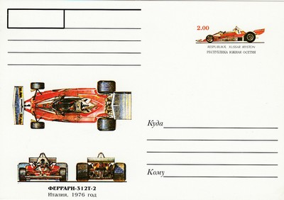 Issue date: 1999 1976 Ferrari 312T2. The Ferrari 312T was based on the 312B3 from 1974. In various versions, it was used from 1975 until 1980. It was designed by Mauro Forghieri for the 1975 season and was an uncomplicated and clean design, that responded to mechanical upgrades. The 312T series won 27 races, four constructors' and three drivers' championships, and was replaced for the 1981 season by the 126 C, Ferrari's first turbocharged F1 car. The car was powered by the powerful and ultra reliable flat-12 engine which gave around 510bhp, the T in the name stood for 'transverse', as the gearbox was mounted in this way, improving the car's handling characteristics, which had been the downfall of its predecessor. The 312T2 was launched at Fiorano and featured a number of modifications over the 312T. In order to comply with the revised aerodynamic rules, the car no longer featured an airbox behind the cockpit. Instead "NACA shaped" air intakes were incorporated into the cockpit sides, feeding air into each cylinder bank of the flat 12 engine. At 2650mm, the wheelbase was 42mm longer than that of the 312T. The 312T2 was if anything, more successful than the 312T. Lauda was comfortably leading the world championship, when at the 1976 German Grand Prix at Nurburgring he had a massive accident caused by a suspected rear suspension failure. In the aftermath he nearly burned to death, but was miraculously back racing just 6 weeks later. Lauda conceded the title by just a single point to James Hunt (McLaren), but the 312T2's superiority helped Ferrari win its second consecutive constructor's title 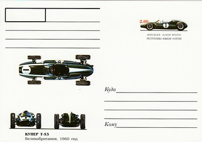 Issue date: 1999 1960 Cooper T-53. For the 1960 Formula One season, Cooper produced the first of the 'Lowline' series. The T53 was narrower and lower than the previous types. This approach gave them a second World Championship with Bruce McLaren and Jack Brabham at the wheel. 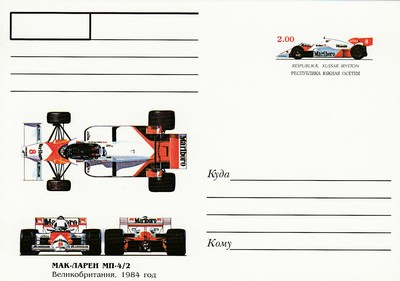 Issue date: 1999 1984 McLarem MP4/2. The McLaren MP4/2 was designed by John Barnard of McLaren for the 1984 season. The car was one of the first to use an all carbon fibre chassis, following on from Lotus. The car was powered by a TAG Porsche V6 Turbo engine, which was first used in the final few races of 1983, at the insistence of Niki Lauda, who felt that the new engine required race testing before a championship challenge could be mounted. His instincts were right on. The MP4/2 was one of the first F1 cars to use carbon brakes, giving it another major advantage over most of its rivals. That, combined to superior fuel consumption and the driving skill of Lauda and Prost saw the MP4/2 score 12 wins in 1984, at the time the highest number of wins in a season by a single team. Lauda beat Prost to the championship by a measly half point in the final race, even though Prost had 7 wins to Lauda's 5. 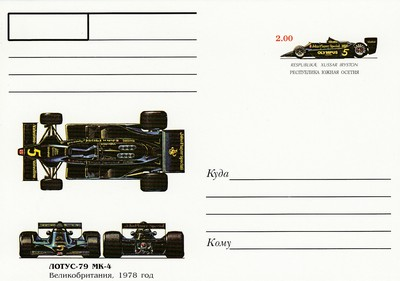 Issue date: 1999 1978 Lotus 79 MK4. The Lotus 79 was the first F1 car to take full advantage of ground effects aerodynamics, pioneered in its immediate predecessor, the Lotus 78. The undercar pressure problems in the 78 were resolved with the 79, with further design work on the venturi tunnels under the car, which allowed the low pressure area to be evenly spaced along the whole of the underside. This was achieved by extending the rear bodywork to a point inside the rear wheels, allowing the underside to extend further back, instead of ending abruptly in front of the rear wheels on the 78. As a result, the rear suspension was also redesigned to allow the air to exit the rear more cleanly than on its predecessor. This allowed a smaller rear wing to be designed, causing less drag. When the car first appeared, the upper bodywork was steeply raked and featured Coke bottle sidepods. After work in the wind tunnel, these features were found to be unnecessary, as the car generated so much downforce anyway. The 79 proved to be almost unbeatable during the 1978 Formula One season and provided an unprecedented level of domination. The car took seven victories during the season giving the drivers' championship to Andretti, and the constructors' championship to Lotus. 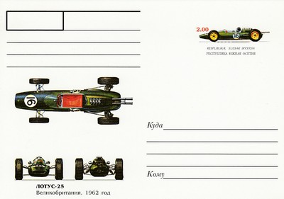 Issue date: 1999 1962 Lotus 25. The Lotus 25 was designed by Colin Chapman. It was a revolutionary design, the first fully stressed monocoque chassis to appear in F1. An early brainchild of Chapman's fertile mind, the original sketches for the car were made on napkins while Chapman discussed his idea while dining out with Lotus chassis designer Mike Costin. The monocoque made the car more rigid and structurally stronger than typical F1 cars of the period. The 25 was three times stiffer than the interim 21, while the chassis weighed only half as much. As a result, the car was extremely low and narrow (frontal area only 8.0 ft squared, 0.74m squared compared to the normal 9.5 ft squared, 0.88 m squared). To assist this, the driver reclined sharply behind the wheel (an idea seen in the 18, and pioneered over a decade previously by Gustav Baumm at NSU), leading to the nickname 'The Bathtub', while front suspension pieces were moved inboard. The 25 was powered by a 1498cc Coventry Climax FWMV V8, although Reg Parnell Racing in 1964 fitted BRM P56s of similar specification to their second-hand 25s. Such was 25's effect on motor racing, even today's modern F1 cars follow its basic principles. 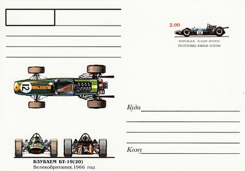 Issue date: 1999 1966 Brabham BT-19. The Brabham BT19 was designed by Ron Tauranac for the British Brabham team. The BT19 competed in the 1966 and 1967 Formula One World Championships and was used by Australian driver Jack Brabham to win his third World Championship in 1966. The BT19, which Brabham referred to as his "Old Nail", was the first car bearing its driver's name to win a World Championship race. The car was initially conceived in 1965 for a 1.5-litre Coventry Climax engine, but never raced in this form. For the 1966 Formula One season the FIA doubled the limit on engine capacity to 3 litres. Australian company Repco developed a new V8 engine for Brabham's use in 1966, but a disagreement between Brabham and Tauranac over the latter's role in the racing team left no time to develop a new car to handle it. Instead, the existing BT19 chassis was modified for the job. Only one BT19 was built. 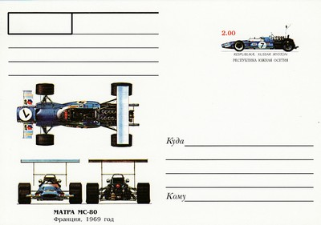 Issue date: 1999 1969 Matra MS80. The Matra MS80 was the Ford Cosworth DFV-powered car (engine 3000 cc, estimated at around 420 bhp) that took Jackie Stewart to the Formula One World Championship title in 1969. The chassis was built in the Matra's F1 base at Velizy-Villacoublay in the southwestern suburbs of Paris, France. Although officially a Matra, it was basically run by the non-works Matra team of Ken Tyrrell. The MS80 was one of the first F1 racing cars to be designed with "wings" for downforce to increase high-speed tyre grip. These were originally introduced into F1 in 1968. Due to some serious racing accidents with the flimsy 1969-type high wing constructions early in the racing season, like all 1969 F1 cars the MS80 was altered to use more sturdy lowered wings, directly attached to the car's body, later on. Only two MS80's were assembled in 1969, a third monocoque was built but remained un-assembled until the EPAF company made it a complete car in 2006. Jackie Stewart in a 2006 issue of the British Motor Sport magazine referred to it as the nicest-handling F1 car he had ever driven. 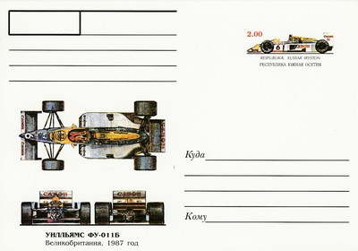 Issue date: 1999 1987 Williams FW-011B. The Williams FW11 was designed by Patrick Head and Frank Dernie as a serious challenger to McLaren and their MP4/2 car. The car took over from where the FW10 left off at the end of 1985, when that car won the last three races of the season. The FW11's most notable feature was the Honda 1.5 Litre V6 turbo engine, the most powerful in F1 at the time producing 800 bhp at 12,000rpm and well over 1,000 bhp in qualifying. Added to the engine's power were the aerodynamics, which were ahead of the MP4/2 and the Lotus 97T. That and its excellent driving pairing of Nelson Piquet and Nigel Mansell made it a force to be reckoned with. The car was an instantly recognisable product of the turbo era of F1. In 1986, the car won first time out in Brazil with Piquet, before Mansell laid down a title challenge with four wins. Williams were shaken by the near fatal road crash of Frank Williams which demoralised the team, but Head stepped up and managed the team until Williams returned late in the season. This may have caused the in-fighting between the two team mates, and the lost points helped Alain Prost take his second world championship. That and Mansell's spectacular blow out in the final race in Australia where all he had to do was finish third to win the title. The points built up between Piquet and Mansell were enough for Williams to take the constructors' championship, however. The FW11 was updated slightly for 1987 to become the FW11B, and the team made no mistakes in wrapping up both championships. Honda were now supplying Lotus with the same engine supplied to Williams, which helped Ayrton Senna challenge consistently, but the FW11's superiority told, and Piquet was champion. As for Mansell, he scored six victories including a memorable win at the British Grand Prix. He scored twice as many wins as Piquet, but also had the lion's share of bad luck and unreliability. Piquet's third championship was assured after Mansell had a major crash during practice for the Japanese Grand Prix. The team tried active suspension for the first time with the FW11, and there were plans to introduce semi automatic transmission, but this never came to pass. The FW11 was not a technical showcase by any means, but solid engineering, the engine's outright power and Piquet and Mansell helped the car take 18 wins, 16 pole positions and 278 points. 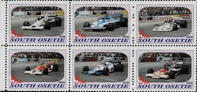 Issue date: 2006 A mini souvenir sheet featuring various Formula 1 cars. 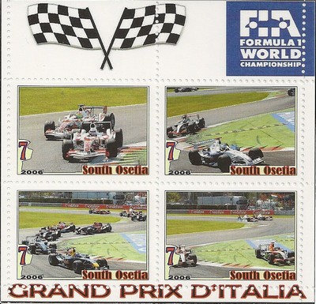 Issue date: 2006 A mini souvenir sheet featuring the Italian Grand Prix. In 2006, Robert Kubica scored his first podium finish in only his third race (for BMW Sauber) - Michael Schumacher won the race for Ferrari. At the post-race press conference Michael Schumacher announced his retirement from motor sport. 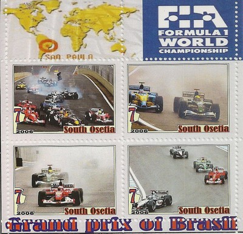 Issue date: 2006 A mini souvenir sheet featuring the Brazilian Grand Prix. In 2006, Felipe Massa became the first Brazilian to win his home Grand Prix since Ayrton Senna in 1993. Fernando Alonso finished second and secured his second successive world championship, becoming, at the time, the youngest double world champion - after a season long battle with Michael Schumacher. 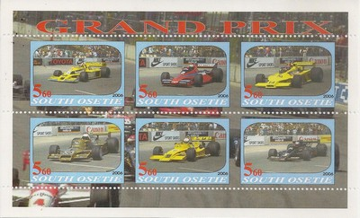 Issue date: 2006 A mini souvenir sheet featuring various F1 cars. |